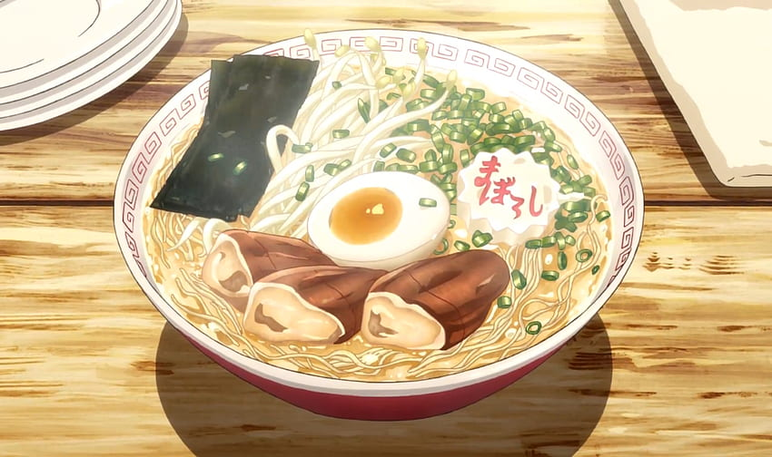

Ramen

Description
Ramen is a delicious meal that can be eaten any time of the day! Try this easy recipe out!
Ingredients
- Noodles
- Ramen Broth
- Egg
- Pork
Directions
- Heat up your ramen broth to 1000 degrees celsius
- Put egg and pork into the water when the desired temperature is reached
- After the broth has cooked for 1 hour you can add you noodles
- Ladel out a portion of broth, pork, egg and noodle into a bowl